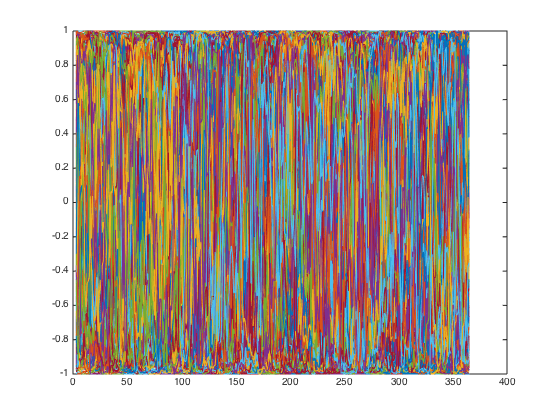
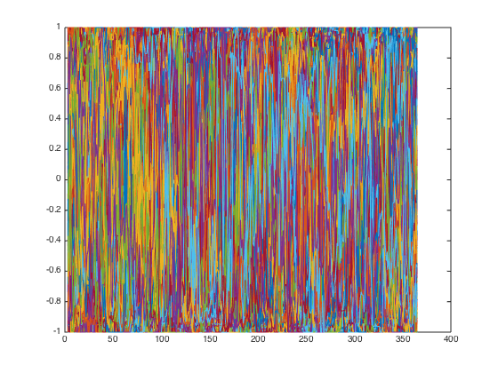
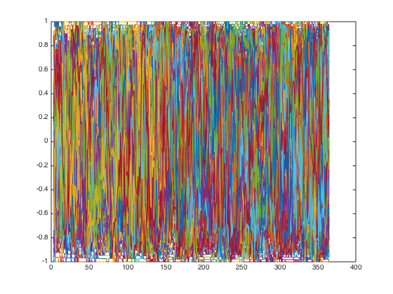
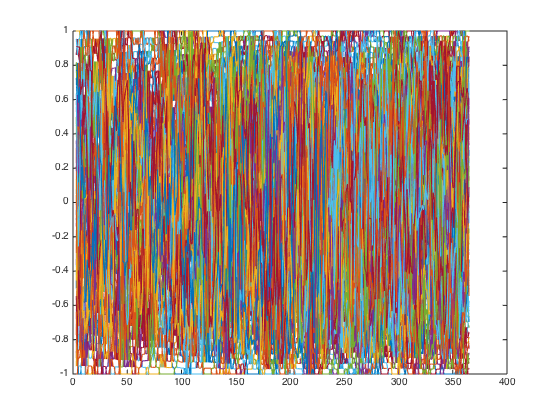
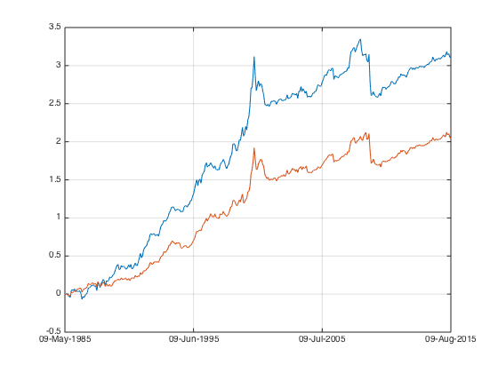

Mom Practical 3
This is the last of Simple Momentum Factor series. It will deal the practical issues.
Contents
Sector neutral
sector neutrality is not a big issue for MOM, but could be significant for other factors. Let's see how to make my MOM sector neutral first.
load the data
load('data_equity_list_us.mat'); load('data_field_list.mat'); load('data_historical_data_us.mat'); index = datasample(1:1300,1000,'Replace',false); px = fun_load_price(history_us, equity_list_us, index); px = fun_clean_data(px); list = equity_list_us(index,:); mom_ts = fun_calculate_mom(px);
this is now we usually rank the securities and generate the [-1 1] score:
mom = fts2mat(mom_ts); security_rank = tiedrank(mom')'; rank_max = max(security_rank,[],2); score = bsxfun (@rdivide, bsxfun(@minus,security_rank,(rank_max+1)/2), ((rank_max-1)/2)); plot(score);
in order to be sector neutral, I need to loop this sector by sector, then combine them all. The rest procedures to generate portfolio weights remains the same.
sector_list = unique(list(not(cellfun(@isempty,list(:,7))),7),'stable'); score = nan(size(mom)); i = 1; while i<=length(sector_list); sector_selector = strcmp(list(:,7),sector_list{i}); mom_temp = mom(:,sector_selector); security_rank_temp = tiedrank(mom_temp')'; rank_max_temp = max(security_rank_temp,[],2); score_temp = bsxfun (@rdivide, bsxfun(@minus,security_rank_temp,(rank_max_temp+1)/2), ((rank_max_temp-1)/2)); score(:,sector_selector) = score_temp; i = i+1; end
let's take a look
plot(score);
snapnow;
plot(score(:, strcmp(list(:,7),sector_list{1})));
snapnow;
plot(score(:, strcmp(list(:,7),sector_list{4})));
snapnow;
   it's functioning as expected.
I should modify my fun_portfolio_weight(), instead of taking in mom_ts, I shall pass score into fun_portfolio_weight_neutral. The proper work flow is:
Proper Procedure
- generate datasample: index = datasample(1:1300,1000,'Replace',false);
- load the dataset: px = fun_load_price(history_us, equity_list_us, index);
- clean the dataset: px = fun_clean_data(px);
- generate the list: list = equity_list_us(index,:);
- generate the observations: mom_ts = fun_calculate_mom(px);
- rank the observations and generate the score: score = fun_rank(mom_ts,'sectorsort')
- generate the portfolio weight: portfolio_weight_ts = fun_portfolio_weight(mom_ts,'equalweight')
- generate teh portfolio return: portfolio_rt_ts = fun_portfolio_return(px, portfolio_weight_eq_weight_ts);
- done.
let's start over again properly.
clear;
load the data
load('data_equity_list_us.mat'); load('data_field_list.mat'); load('data_historical_data_us.mat');
take data sample, load data & the list
index = datasample(1:1300,1000,'Replace',false);
px = fun_load_price(history_us, equity_list_us, index);
px = fun_clean_data(px);
list = equity_list_us(index,:);
generate the observation
mom_ts = fun_calculate_mom(px);
generate scores
score_ts = fun_calculate_score(mom_ts,list,'fullsort'); score_sector_ts = fun_calculate_score(mom_ts,list,'sectorsort');
calculate portfolio weight
portfolio_weight_ts = fun_portfolio_weight_sector_neutral(score_ts,'topm',0.1); portfolio_weight_sectorsort_ts = fun_portfolio_weight_sector_neutral(score_sector_ts,'topm',0.1);
calculate portfolio return
portfolio_rt_ts = fun_portfolio_return(px, portfolio_weight_ts); portfolio_rt_sectorsort_ts = fun_portfolio_return(px, portfolio_weight_sectorsort_ts);
plot the result
plot(cumsum(portfolio_rt_ts)); legend('off'); hold on; plot(cumsum(portfolio_rt_sectorsort_ts)); legend('off'); hold off; [sqrt(12)*sharpe(fts2mat(portfolio_rt_ts),0) sqrt(12)*sharpe(fts2mat(portfolio_rt_sectorsort_ts),0)] [sqrt(12)*std(fts2mat(portfolio_rt_ts)) sqrt(12)*std(fts2mat(portfolio_rt_sectorsort_ts))]
ans =
0.5684 0.5387
ans =
0.1800 0.1249
 it doesn't improve the sharpe at all. The sector sorted portfolio exhibits lower volatility.